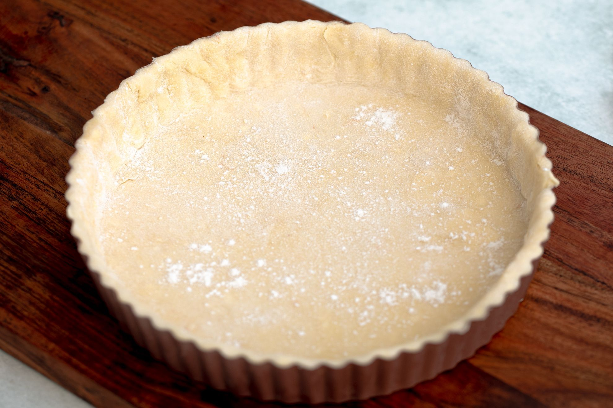

Quiche dough

Description
This is a basic and quite handy recipe for quiche dough. You can use it for any quiche recipe you want.
Ingredients
- Flour: 200gr
- Butter: 100gr
- Water: 50ml
- Salt: A pinch
Steps
- Put the flour in a bowl
- Add the butter and mix it with the flour until it looks like sand
- Add the water and the salt and mix it until it's a dough
- Put the dough in the fridge for 30 minutes
- Roll the dough and put it in a baking tray
- Preheat the oven to 180ºC
- Bake the dough for 10 minutes
And done! You can put any filling of your liking now!
Back to menu